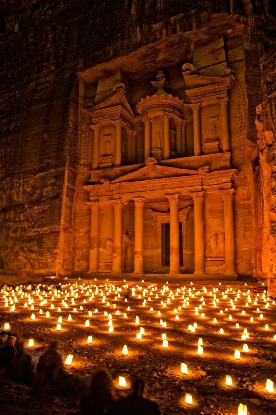

Fondée vers la fin du viiie siècle av. J.-C., par les Édomites, elle est ensuite occupée vers le vie siècle av. J.-C. par les Nabatéens qui la font prospérer grâce à sa position sur la route des caravanes transportant l'encens, les épices et d'autres produits précieux entre l'Arabie du Sud, l'Égypte, la Syrie et la Méditerranée. Pétra a abrité à son apogée, vers l'an 50, jusqu'à 25 000 habitants. Vers le viiie siècle, la modification des routes commerciales et plusieurs séismes entraîneront l'abandon progressif de la ville. Tombé dans l'oubli à l'époque moderne, le site est redécouvert en 1812 par le monde occidental grâce à l'explorateur suisse Jean Louis Burckhardt. Les nombreux bâtiments, dont les façades monumentales ont été directement taillées dans la roche, en font un ensemble unique qui est inscrit, depuis le 6 décembre 1985, sur la liste du patrimoine mondial de l'UNESCO. La zone autour du site est en outre, depuis 1993, un parc national archéologique. L'érosion, les pluies et le tourisme — en progression constante depuis la fin du xxe siècle — sont cependant une menace pour la préservation du site et des actions sont entreprises pour enrayer la destruction des monuments. Les communautés locales bédouines, les Bedul, sont intégrées de manière participative à la préservation du site de Pétra et à l'économie du tourisme. Victime de l'instabilité politique de cette région du monde, le site connaît, au cours de certaines années, une baisse de la fréquentation touristique qui entraîne une perte de revenus pour les communautés locales qui vivent du commerce touristique.
À partir de 1830, le site de Pétra devient un lieu de visite, complément de pèlerinages religieux, mais également lieu de découvertes pour érudits, amateurs éclairés, savants de toutes provenances, assyriologues, spécialistes des études bibliques, artistes et géographes qui sont souvent attirés par ce que l'on appelle le « mythe nabatéen ». Les chefs bédouins des alentours de Pétra trouvent dans cette nouvelle affluence les sources de nombreux profits. Cependant, en fonction de l'état des rivalités entre tribus, certains de ces chefs parfois hostiles à l'arrivée des visiteurs rendent fort dangereux un voyage déjà coûteux en engagement de guides interprètes, en droits de passage ou en location de bêtes de somme124. En 1923, l'émir Abdallah Ier (à la tête la Transjordanie de 1921 et roi de Jordanie de 1946 jusqu'à sa mort en 1951) entre en pourparlers avec les scheiks des cinq tribus Bedul. À la suite de ces pourparlers, les tribus se constituent en une entité unique conduite par le chef de l'une d'entre elles : Hweimel Salem Eid. L'émir lui accorde et enregistre officiellement les droits d'occupation et d'utilisation des territoires de Pétra. Il autorise la nouvelle entité « Bedul » à gérer et taxer ces territoires en échange de l’acceptation de la tutelle du gouvernement. Depuis cet accord, un tourisme plus important et plus sécurisé commence à se développer à Pétra129.